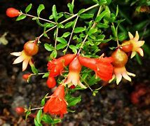

Basonym of Drug
Dadima
Main Synonym
- Dantabija
- Karaka
- Lohitapushpaka
- Kuttima
- Sukavallabha
- Nilapatra
- Phalamla
- Kuchphala
Regional Name
- Bengali: Dalima Gach
- Gujarati: Dadam
- Hindi: Anar, Dadima
- Tamil: Madalai, Madalam
- Telugu: Dalimbakaya
- English: Pomegranate
Botanical Name
Punica granatum Linn.
Family
Punicaceae
Classification (Gana)
- Charak Samhita: Hridya and Chardinigrahana Mahakashaya
- Sushruta Samhita and Acharya Vagbhatta: Parushakadi Gana
External Morphology
Small to medium deciduous shrub/tree
Useful Parts
- Fruit
- Fruit rind
- Root bark
- Floral bud
Important Phytoconstituent
Tannins, Punicalin, Punicic Acid
Rasa Panchak
- Rasa: Kashaya, Madhura, Amla
- Guna: Laghu, Snigdha
- Virya: Ushna
- Vipaka: Madhura/Amla
Action
Tridoshahara
Therapeutic Indication
- Grahi (Stops bleeding or secretions)
- Hridya (Cardiac tonic)
- Jvarahara (Anti-pyretic)
Therapeutic Uses
- Arsha - Dadima juice used in the preparation of ghee is useful to treat piles.
- Updamsha - Dadima bark powder is applied externally in STDs.
- Krumi - Bark decoction is useful as an antihelmintic.
Dose
- Fruit Juice - 20-50 ml
- Decoction - 30-80 ml
- Rind and Bark - 3-5 gm
Formulations
- Dadimadhya Ghrita
- Dadimastaka Churna
- Lavanbhaskara Churna
- Dadimadi Taila
- Chatusama Dadima Churna
- Gangadhara Churna
Adverse Effect
Not Known